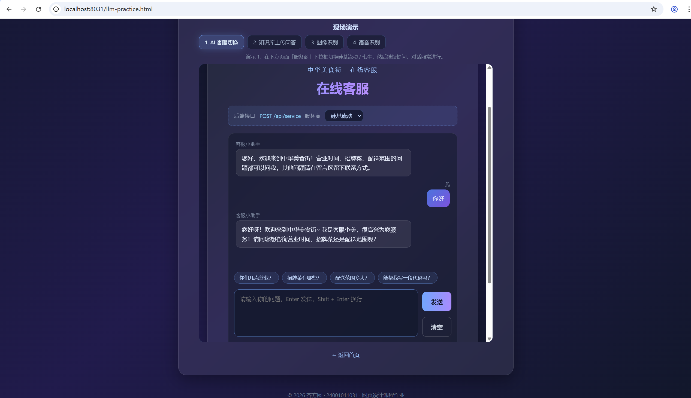
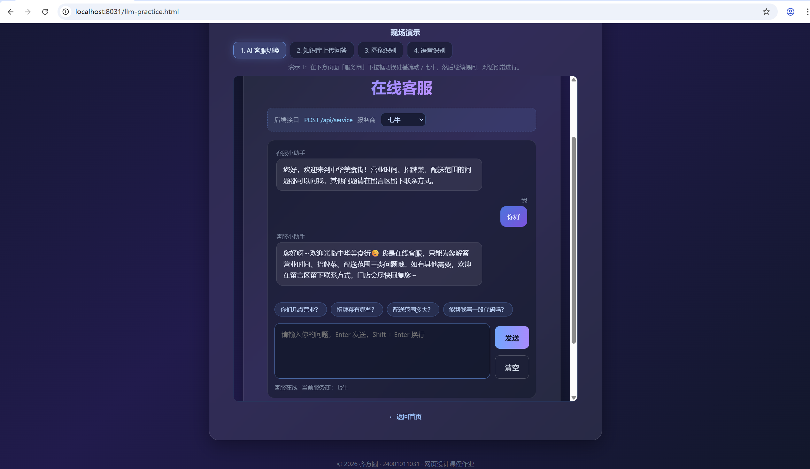
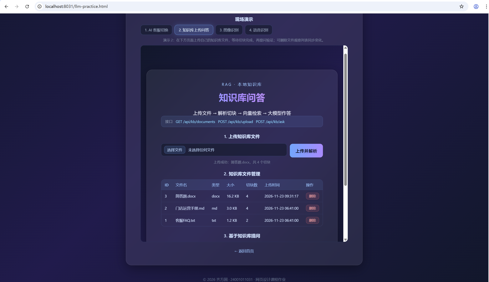
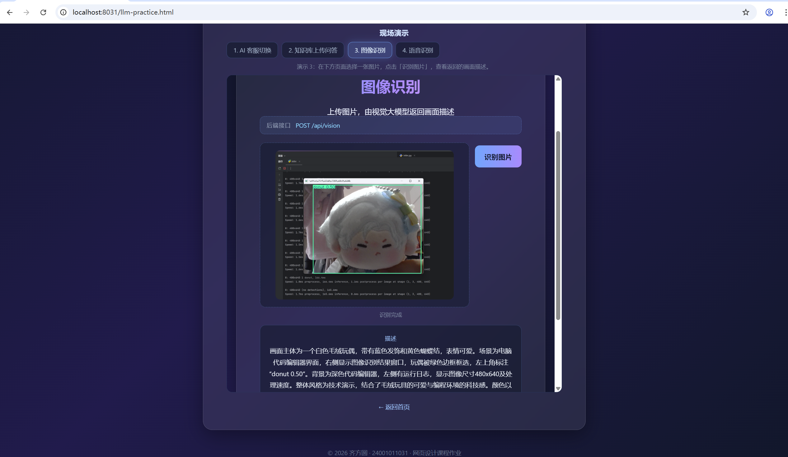
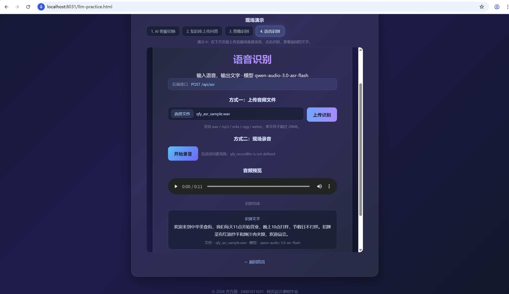

AI APPLICATION · CLASSROOM PRACTICE
大模型课堂实践截图
这里汇总了实践页面在本地运行时的五张截图，记录在线客服、知识库问答、图像识别与语音识别的实际效果。点击任意截图可在新标签页查看原图。
4 个实践模块
5 张运行截图
2 个客服服务商
01
AI 客服切换
在同一客服界面中切换模型服务商，分别验证硅基流动与七牛的问答效果。


02
知识库上传问答
上传并解析本地文档，展示知识库文件列表、文件类型、大小及切分数量。

03
图像识别
上传图片后调用视觉大模型，返回对画面主体、场景和细节的文字描述。

04
语音识别
上传音频文件并完成识别，页面同步显示音频预览、识别文字和所用模型。
